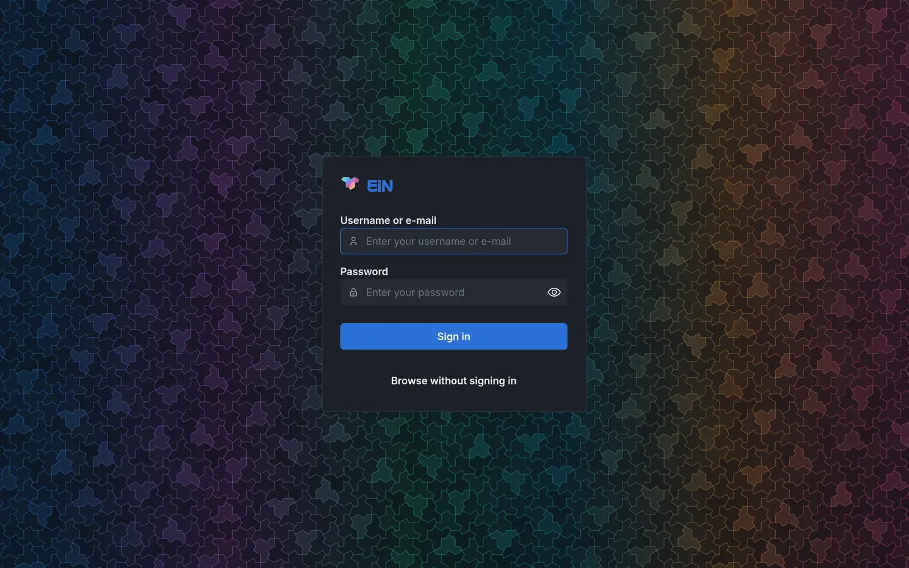
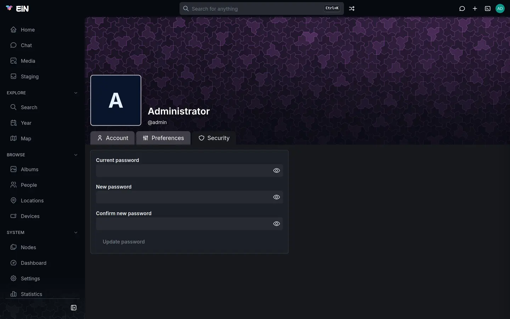

This page takes you from a Linux machine to an EiN you can sign in to: what the machine needs, the one command that installs EiN, what you see while it runs, and what to do first once it is up. It is the quick path for trying EiN on your own machine. Installing in detail covers everything else.
What you need
EiN runs as a few containers on one Linux machine. The installer builds them from source on that machine: there are no ready-made releases. It needs no root, but the tools it uses must be installed first.
What the machine needs depends on whether you install EiN on its own (EiN Core) or with the media service, which the Archive needs to make thumbnails, find faces, read text and make pictures searchable:
| EiN Core | With the media service (--ems) |
|
|---|---|---|
| System | Linux on x86-64 | Linux on x86-64 |
| Container engine | podman, run as your own user (rootless), with podman compose; or Docker with its compose plugin |
the same |
| Tools | git, curl and openssl |
the same |
| Processor | 2 cores | 4 cores; 6 or more recommended |
| Memory | 4 GB | 16 GB; 32 GB recommended |
| Free disk | 10 GB, plus your files | about 100 GB, plus your files |
| Graphics card | not used | optional: NVIDIA, 16 GB recommended, 8 and 12 GB work |
Cores are counted as physical cores, not threads. The language model for the assistant (--llm) takes several GB more, on the graphics card or in memory. With 16 GB of memory, leave it out or use a hosted model instead; The language model explains both.
A few more things to know before you start:
- No macOS, Windows or ARM. The installer stops at once on anything but Linux on x86-64, a Raspberry Pi included.
- Internet access. The install fetches the sources from GitHub and the base images from their registries. At its first start EiN downloads the modules you named from GitHub, and the language model downloads its model from Hugging Face.
- Docker needs your user to have access to its daemon, usually by being in the
dockergroup. The installer does not check this. - A graphics card is optional. Without one everything works, only slower. Only NVIDIA cards are used, with driver 610 or newer to encode video on the card. The graphics card has the setup.
- A current browser that shows AVIF and plays AV1 video: Chrome, Edge or Firefox, or Safari 17 and newer on an Apple device that decodes AV1 (M3, A17 Pro or later).
On Ubuntu 24.04, for example, this installs the tools for the podman route:
# on the machine that will run EiN
sudo apt install podman podman-compose git curl opensslChoose what to install
There are two install commands. Both check the machine first and install nothing when it falls short.
EiN Core is EiN and its database: the tree, the web interface, the shell, SSH and SFTP. You add the rest when you want it.
# on the machine that will run EiN, as your own user
curl -fsSL https://einhq.eu/install.sh | bashEiN Archive is the full Archive installation: EiN with the media service, the assistant's language model, and the Archive and assistant modules.
# on the machine that will run EiN, as your own user
curl -fsSL https://einhq.eu/install.sh | bash -s -- --ems --llm --module archive --module assistantEverything after bash -s -- is passed on to ~/ein/setup.sh, EiN's own setup script:
| Option | What it adds |
|---|---|
--ems |
The media service: every media tool and model, in an image of about 30 GB. It uses the graphics card when the first install found one ready for containers. |
--llm |
The language model the assistant answers with, Qwen3.5-4B in llama.cpp. |
--module <name> |
A module, such as archive or assistant, which EiN installs at its start with the modules it needs. Give it once for each module. |
--no-ems, --no-llm |
Leave the media service or the model out again on a later run. Its data stays. |
Check the machine without installing
EIN_CHECK=1 runs the checks for the options you give and stops. A variable for the installer goes in front of bash, not in front of curl:
# on the machine that will run EiN
curl -fsSL https://einhq.eu/install.sh | EIN_CHECK=1 bash -s -- --ems --llmYou can read the installer before you run it: it is at einhq.eu/install.sh, and its source is on GitHub.
Choose where your files go
EiN goes in ~/ein, and your files in ~/ein/data unless you name another folder with EIN_DATA. The folder holds your originals, so put it on a disk with room for them, in a folder your user can write to:
# on the machine that will run EiN, as your own user
curl -fsSL https://einhq.eu/install.sh | EIN_DATA=/mnt/photos/ein bash -s -- --ems --llm --module archive --module assistantEIN_DATA is read only by the first install, when ~/ein/.env is written. Later runs keep the folder named there.
Run the installer
- Open a terminal on the machine as your own user. Do not use
sudoor a root shell: the installer and EiN are meant to run as your own user. - Paste one of the install commands above and press Enter.
- Read the report. Each line is one check, its result, and why:
EiN: checking this machine against the system requirements
system ok Linux on x86-64
podman ok 5.4.2, rootless
compose ok podman compose, with podman-compose
git ok
curl ok
openssl ok
processor ok 8 cores
memory ok 31 GB
disk ok 870 GB free under /home/anna/ein/data (not made yet; measured on /home/anna), plus room for your own files
graphics ok NVIDIA GeForce RTX 4070, 12282 MB, driver 610.31
card memory low 12282 MB: works; 16 GB is recommended, room for the media models and the assistant side by side
container GPU ok nvidia-container-toolkit 1.18.1, CDI spec in /var/run/cdi
This machine can run EiN; 1 item(s) are below what is recommended.The graphics lines appear only with --ems or --llm, and the thresholds for processor, memory and disk are the higher ones only with --ems. On a terminal the results are coloured:
| Result | Colour | What it means |
|---|---|---|
ok |
green | The machine meets it. |
low |
yellow | Below what is recommended. The install goes on. Every graphics line is at most low: without a usable card, the media service and the model run on the processor. |
missing |
red | A requirement is not met. The reason says what to install or how much is needed. |
The last line is the verdict:
| Verdict | What happens |
|---|---|
<n> requirement(s) not met, so nothing was installed. |
The installer stops before it fetches anything, and your machine is as it was. Fix what the missing lines name and run the command again. |
This machine can run EiN; <n> item(s) are below what is recommended. |
The install goes on. The low lines tell you what would make EiN faster or roomier. |
This machine meets the recommended requirements. |
The install goes on. |
The disk check measures the free space where your files go. The images and the database are kept in the container engine's own storage (for rootless podman, usually under ~/.local/share/containers), which is often the same disk but need not be: that disk needs the room too.
What the installer does
Once the checks pass, the installer:
- Fetches ein/deploy into
~/ein, or updates it when it is there already, and runs~/ein/setup.shwith your options. setup.shwrites~/ein/.envthe first time: your options, the folder for your files, and the passwords it makes for the database, the media service and theadminaccount.- It fetches the sources of EiN and its database, and of the media service and the model when you chose them, into
~/ein/src. - It builds the images on your machine. The language model's image is the one exception: it is downloaded ready-made.
- It starts everything with
podman composeordocker compose, and waits for EiN to answer. - At its first start, EiN sets up its database, makes the
adminaccount, downloads the modules you named and the modules they need, sets them up, starts its services, and givesadminthe passwordINITIAL_ADMIN_PASSWORDin.env. setup.shprints the address of EiN and the admin password, which it prints again at the end of every run until you delete its line from.env.- It makes EiN start again when the machine does, where your user may: under podman it turns on
podman-restart.servicefor your user and lets your user's services run without a login. What it may not do, it prints as commands for you to run, such assudo loginctl enable-linger anna.
The end of a run looks like this:
Fetching https://github.com/einhq/deploy into /home/anna/ein
Wrote .env: your files go under /home/anna/ein/data
== Fetching the sources
core 4b85250 2026-10-24
db 7c1d0e2 2026-10-02
ems 93fa61b 2026-10-21
llm 2e8b4d7 2026-09-30
== Building the images (the media service the first time: about 30 GB)
…
== Starting EiN
…
Waiting for EiN to answer at http://127.0.0.1:8080/; its first start takes a minute or more
…
EiN is up at http://ein:8080/
Sign in as admin with the password 5e0c9a2f71b3d846 and change it, then delete the line INITIAL_ADMIN_PASSWORD from /home/anna/ein/.env.
Enabled podman-restart.service, which starts EiN's containers at boot
Enabled lingering for anna, so podman-restart.service runs at boot without a login
EiN starts again when the machine does.How long it takes
Most of the time goes into the build, and how long that takes depends on your connection and your processor. EiN Core is the shorter of the two. With the media service, its image of about 30 GB is downloaded and built as well, which takes by far the longest. The build prints its own output as it goes.
After == Starting EiN, setup.sh prints Waiting for EiN to answer at … and then, every 10 seconds, EiN's newest log line when it has changed. The first start takes longer, as EiN also downloads the modules you named. It waits up to 10 minutes, and stops sooner when EiN's container stops or keeps restarting.
With the media service and the model, two parts are still getting ready when the password appears. The media service loads its models for a few minutes after it starts; until then the Dashboard's health check for ems says http://ems:8181 is not answering; work that needs it waits, and the work resumes by itself. The language model downloads its model the first time it starts, so the assistant may not answer for a while.
What is where
| Where | What it holds |
|---|---|
~/ein |
setup.sh, the compose files, the sources under src/, and .env |
~/ein/.env |
your options and the passwords made at the install, kept nowhere else |
~/ein/data, or your EIN_DATA |
your originals, the thumbnails and other renditions, scratch space, the language model and the installed modules |
the ein_db volume |
the database: every name, folder, album, person, setting and account, in the container engine's storage |
Keep .env safe. EiN has no backup command; Your data explains what to copy and why the database and the data folder belong together.
Sign in
- Open the address
setup.shprinted, such ashttp://ein:8080/, in a browser. On the machine itself,http://localhost:8080/works too. If another computer cannot find the machine by that name, use its address instead, such ashttp://ein.local:8080/orhttp://192.168.1.20:8080/. - In Username or e-mail, type
admin. - In Password, type or paste the password
setup.shprinted, and click Sign in.


You land on the home page, Welcome, which is empty until there is something in EiN. There is no setup wizard: First steps walks you from here to a family using it.
EiN listens on port 8080 for the web and 2222 for SSH and SFTP, on every address of the machine, over plain HTTP. That is fine at home. Before you make EiN reachable from outside your home, read Ports, HTTPS and remote access. When something else on the machine already uses 8080 or 2222, setup.sh gives EiN the next free port instead, says so (Port 8080 is taken on this machine: EiN uses 8081 instead (EIN_HTTP_PORT in .env)), keeps it in .env, and prints the address with it.
Change the admin password straight away
Do this before anything else:
- The password is in
~/ein/.env, asINITIAL_ADMIN_PASSWORD, readable by anyone who can read that file, andsetup.shprints it at the end of every run while the line is there. - Once you have changed it, delete that line from
.env. Changing the line does not change the password: EiN reads it only at its first start. - EiN has no way to recover a lost administrator password. Only another administrator can set a new one, and a fresh install has no other.
In the web interface
- Click your picture at the top right to open the account menu, and choose Profile.
- Open the Security tab.
- In Current password, enter the password
setup.shprinted. - Enter your own password in New password, and again in Confirm new password.
- Click Update password. Password updated appears beside the button.


In the terminal
Open the terminal with the terminal button in the top bar, or Alt+T, and run:
# in EiN's terminal
user passwd adminIt asks Password:, sets what you type, and answers Password updated successfully. It asks only once, so type carefully. The name is required: user passwd on its own answers user passwd: missing username. The reference lists its options.
Your profile, favourites and trash has more on the profile, and Accounts and groups on making accounts for your family.
Add parts later
Everything the Archive command installs can be added to EiN Core afterwards. Run setup.sh in ~/ein with the option:
# on the machine EiN runs on
~/ein/setup.sh --ems # the media service
~/ein/setup.sh --llm # the assistant's language model
~/ein/setup.sh --module archive # a module, with the modules it needs- An option is kept in
.envonce given, so a later run without it keeps it. Give each option only when you add it. - Every run of
setup.shis also an update: it brings~/einitself up to date, fetches the newest sources of what is installed, builds again and restarts EiN, which is down while it starts. Updating has the details. - A module given with
--moduleis installed by EiN at its next start, which that same run brings about. --no-emsand--no-llmtake the media service or the model out again. Their data stays.
Modules can also be installed without a restart. In the web interface, open Settings → Modules, click the Published modules button beside the filter, and click Install on the module. In the terminal, mod install archive does the same (reference). Modules covers updating and removing them, and why a module you remove in Settings → Modules comes back at the next start while EIN_MODULES in .env still names it.
Instead of --llm, the assistant can use a hosted model, set in ~/ein/.env: see The language model.
When something goes differently
The commands here are written for podman. With Docker, write docker compose where they say podman compose.
| What you see | What to do |
|---|---|
<n> requirement(s) not met, so nothing was installed. |
Nothing was changed. Install or free what the missing lines name, and run the command again. |
The podman line says low and run as root here: run the installer, and EiN, as your own user |
You ran the installer as root. Run it again as your own user, without sudo. |
The compose line says missing and install podman-compose, which 'podman compose' runs |
Install podman-compose, or for Docker its compose plugin, and run the command again. |
A line about an external compose provider each time podman compose runs |
podman's own notice that podman compose runs podman-compose. It is not an error. |
setup.sh: EiN stopped before it answered; its log is above: podman compose logs ein |
EiN's container stopped, or restarted three times. The last lines of its log are printed above the message; they name what went wrong. See Troubleshooting. |
setup.sh: EiN did not answer at http://127.0.0.1:8080/ in 10 minutes: podman compose logs ein |
Look at what EiN is doing with cd ~/ein && podman compose logs ein. A first start that downloads modules over a slow connection can take this long; podman compose ps shows whether it still runs. |
Starting fails with unresolvable CDI devices nvidia.com/gpu=all |
The container engine cannot hand the graphics card to the containers. podman before 5, such as 4.9.3 on Ubuntu 24.04, needs a fix once per machine, which the installer's container GPU line names: see The graphics card. |
No Sign in as admin line at the end |
.env has no INITIAL_ADMIN_PASSWORD line: you deleted it, or .env was written before setup.sh kept the password there. In the second case a new EiN printed a random password to its log, below. When nothing is there, the database was there from an earlier install, so the admin already had a password, or the containers have been made again since. See Troubleshooting. |
some of INSTALL_MODULES could not be installed; continuing boot in the log |
EiN could not download a module, often for want of a connection to GitHub. Install it from Settings → Modules once EiN is up. |
| The address does not open on another computer | Use the machine's IP address instead of its name, and open ports 8080 and 2222 in the machine's firewall if it has one. See Ports, HTTPS and remote access. |
EiN does not start again when the machine does until this has run: at the end |
setup.sh could not turn on what starts EiN at boot, such as lingering for your user. Run the commands listed below the line; until then, start EiN after a reboot with cd ~/ein && podman compose up -d. Installing in detail explains. |
| Uploads in the Archive get no thumbnails | The media service is not installed, or is not answering yet. Without it, the installer's archive line says low and setup.sh ends with The Archive module needs the media service, which is not installed here: ./setup.sh --ems adds it. Add it with ~/ein/setup.sh --ems, or see The media service. |
To find a random admin password in the log, as long as the containers have not been made again since:
# on the machine EiN runs on
cd ~/ein && podman compose logs ein | grep 'Admin password set to'Troubleshooting has more questions and answers.
Next
- First steps: from the first sign-in to a family using EiN.
- Installing in detail: every option and variable, podman and Docker, what runs where, and running EiN day to day.
- The graphics card and Ports, HTTPS and remote access, when you want EiN faster or reachable from outside.
- Modules: what each module brings and how to install, update and remove it.